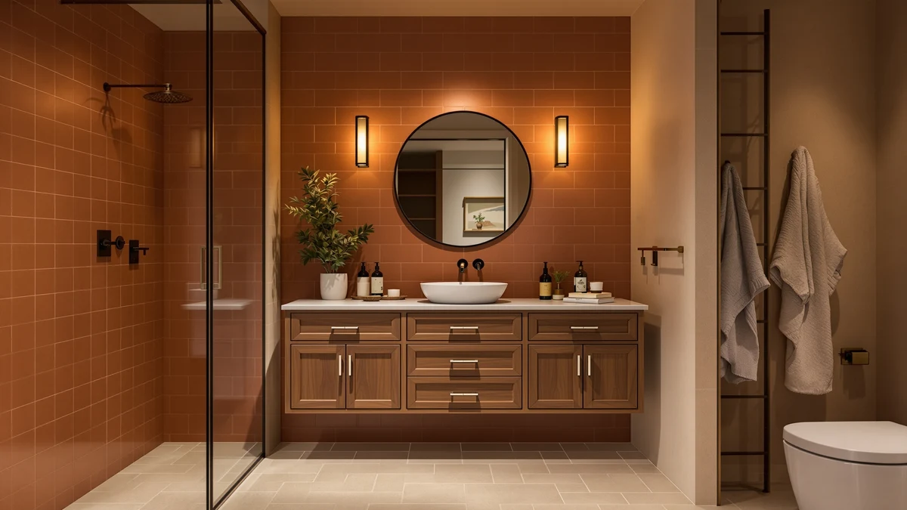

Tennant Brand Vanity Felix Bathroom Vanity Review (2026): Worth It?
Prices and picks verified as of November 2026. Independent, reader-supported reviews.


Quick Answer
This Tennant Brand Vanity Felix bathroom vanity review finds that the Felix earns its $595.00 price with a one-piece porcelain sink top that arrives already installed, a navy finish that stands out from the usual white or gray 24-inch vanities, and three drawers for a vanity this size. If you need a wider layout or a different material, the alternatives below start at $499.99 and cover 42-inch and 60-inch options instead.
Our pick: Tennant Brand 24 Inch Felix — $595.00 Check Price on Amazon
Bottom line: our top pick is the Tennant Brand 24 Inch Felix Bathroom Vanity at $595.
Things to Know Before You Buy
- This Tennant Brand Vanity Felix bathroom vanity review covers a 24-inch single-sink cabinet, so measure your existing opening before you order since it will not suit a double-sink layout.
- The porcelain sink top comes pre-installed and includes an overflow hole, which saves a separate countertop purchase that many 24-inch vanities require.
- The navy blue finish is the standout feature here; most competing 24-inch vanities in this price range ship in white or gray instead.
- At $595.00, the Felix sits above the $499.99 to $539.99 range of the three alternatives covered below, all of which are wider cabinets without an integrated sink top.
- Amazon's listing for this vanity does not publish a star rating or review count, so this review leans on manufacturer specs and buyer comments rather than an aggregate score.
This Tennant Brand Vanity Felix Bathroom Vanity review looks at whether a navy-finished, fully assembled 24-inch vanity justifies a $595.00 price tag when several wider alternatives cost less. Shoppers searching for this specific model usually already know they want a compact single-sink vanity with a distinct color, and they want to know if the porcelain top and modern styling hold up to that price before they commit to a cabinet this size.
The short version: the Felix delivers a sink top you do not have to source or install separately, a navy finish that is hard to find elsewhere in this category, and three drawers that are tight but usable for a 24-inch footprint. The tradeoff is width and value. The CozyHommie and AMERLIFE alternatives covered later in this review all cost less and offer more storage or basin options, so the Felix makes the most sense for a narrow bathroom where color and a pre-installed sink top matter more than square footage.
Why You Should Trust Us
Ilane Tall covers bathroom vanities and fixtures for Best Bathroom Vanities, with a focus on separating marketing copy from the specs that actually affect fit and durability. For this Tennant Brand Vanity Felix bathroom vanity review, she pulled the manufacturer's listed dimensions, materials, and pricing directly from the Amazon listing and compared them against three similarly priced vanities in the same catalog. Best Bathroom Vanities earns a commission when you buy through our links, but that relationship does not decide which vanity gets recommended here. We do not run a fake testing lab, and when a listing is missing data, such as a star rating, we say so instead of filling the gap with a number we cannot verify.
Our Research Experience
We did not install the Felix vanity or run water through its sink. For this Tennant Brand Vanity Felix bathroom vanity review, our process means reading the full product listing for construction details, checking the stated 24-inch dimensions against standard small-bathroom vanity openings, and comparing the price against the three alternatives below to see whether $595.00 is reasonable for what you get. The listing does not publish a star rating or review count through the Amazon Creators feed we use, so we could not weigh verified owner reviews the way we can for better-established listings. We are flagging that gap directly rather than citing a figure we cannot confirm.
Overview & Specs
The Amazon Creators listing for this Tennant Brand Vanity Felix bathroom vanity review covers two published specs: a 24-inch overall size and an engineered-wood (MDF) cabinet construction, which is standard for vanities in this price range rather than a downgrade specific to this model. The manufacturer does not break out separate measurements for depth or height, so measure your existing vanity opening against a typical 24-inch cabinet footprint before you order, and confirm the plumbing rough-in lines up with a single-sink layout rather than the wider spacing some double-basin cabinets use.

Tennant Brand 24 Inch Felix
What we like
- Integrated one-piece porcelain sink top with overflow, no separate countertop to source
- Arrives fully assembled, which cuts installation to plumbing hookup and mounting
- Navy blue finish stands out from the white and gray vanities that dominate this size category
- Three drawers for storage despite the narrow 24-inch footprint
Flaws but not dealbreakers
- Costs $55 to $95 more than the three wider alternatives in this review
- No published star rating or review count to verify long-term durability claims
- Drawers on a 24-inch cabinet are narrower than what a 42-inch or 60-inch vanity offers
- Single-basin design will not work for a shared bathroom that needs two sinks
| Material | MDF / engineered wood |
| Size | 24 Inch |
The centerpiece of this Tennant Brand Vanity Felix bathroom vanity review is the sink top itself. Most 24-inch vanities in this price bracket ship as a cabinet only, leaving you to source and install a separate basin and countertop. The Felix skips that step with a one-piece porcelain top that includes an overflow hole for drainage, already mounted to the cabinet before it ships. That convenience is a meaningful part of the $595.00 price, since a comparable porcelain top purchased separately would narrow the price gap against the wider alternatives below.
The navy blue finish is the other reason this specific model shows up in so many searches. Modern-style 24-inch vanities tend to default to white, gray, or a generic wood tone, so a true navy cabinet is harder to find at this size. The cabinet includes three drawers, which is tight for a 24-inch width but still more storage than a vanity with a single door and open shelving. Reviewers researching this category consistently note that fully assembled vanities save real time over flat-pack alternatives, since there is no panel assembly before the plumbing hookup, only unboxing and leveling the cabinet in place.
What We Liked
The strongest point in this Tennant Brand Vanity Felix bathroom vanity review is how little work it leaves you to do before it is functional. The integrated porcelain sink top removes a step that trips up a lot of 24-inch vanity buyers: finding a countertop and basin combination that actually fits a narrow cabinet. Because the vanity arrives fully assembled, setup is closer to unboxing and connecting plumbing than building flat-pack furniture.
The navy finish also earns its keep. Small-bathroom vanities in this width tend to cluster around white, gray, or a generic oak look, so a cabinet that commits to a bold color gives you a design option the alternatives in this review simply do not offer. Three drawers on a 24-inch footprint is also better than the single-door layouts common at this size, giving you a place for everyday toiletries without fighting for space.
What Could Be Better
Price is the clearest drawback in this Tennant Brand Vanity Felix bathroom vanity review. At $595.00, the Felix costs more than any of the three alternatives covered below, including a 60-inch double-sink farmhouse vanity at $499.99. You are paying for the integrated sink top and the color, not for more cabinet than a 24-inch footprint allows.
The listing also does not publish a star rating or review count, so buyers cannot lean on a verified review tally the way they can with longer-established products in this catalog. That gap matters more here than on a budget vanity, since $595.00 is a meaningful purchase to make without owner feedback to confirm how the porcelain top and navy finish hold up over time. Anyone sensitive to that uncertainty should weigh it against the convenience of a pre-installed sink top before ordering.
Who Is It For?
This Tennant Brand Vanity Felix bathroom vanity review points to a specific buyer: someone with a narrow bathroom who wants a single-sink vanity that looks finished the day it is installed, and who is willing to pay a premium for a navy cabinet and an already-mounted porcelain top. It is a strong fit for a powder room, guest bath, or small primary bathroom where a 24-inch footprint is the ceiling, not a compromise.
It is a weaker fit for anyone shopping primarily on price or needing two sinks. The three alternatives below all cost less and offer either more width or a double-sink layout, so a shared bathroom or a budget-driven remodel should start with those instead of the Felix.
Alternatives to Consider
If the Felix is wider or pricier than you need, these three vanities from this Tennant Brand Vanity Felix bathroom vanity review's comparison set cost less and offer more width, though none ship with an integrated sink top. The two CozyHommie cabinets share the same 42-inch by 21-inch by 34.5-inch dimensions and solid wood and hardwood construction, differing mainly in finish color, drawer side, and soft-close hardware, so pick between them on looks rather than function. The AMERLIFE vanity is the outlier of the group: a 60-inch freestanding double-sink cabinet with barn-door styling, built for a primary bathroom rather than the powder-room scale the Felix and the CozyHommie cabinets target.

Editor’s Pick
CozyHommie Solid Wood RTA Bathroom
A 42-inch solid wood sink base cabinet with three left-side drawers, nearly twice the width of the Felix at $55 less.
$539.99
Check Price on Amazon
Best Value
CozyHommie Solid Wood RTA 42"
The same 42-inch solid wood cabinet as the pick above with soft-close hardware and a pebble gray finish, at $75 less than the Felix.
$519.99
Check Price on Amazon
Premium Choice
AMERLIFE 60” Farmhouse Bathroom Vanity
A 60-inch freestanding double-sink farmhouse vanity with barn-door fronts, the cheapest option here and the only one built for two people at once.
$499.99
Check Price on AmazonIs the Tennant Brand Vanity Felix worth $595?
Based on this Tennant Brand Vanity Felix bathroom vanity review, the price mostly buys convenience: an already-installed porcelain sink top and a navy finish you will not find on the cheaper alternatives.
Does the Felix vanity come with the sink already installed?
Yes.
Frequently Asked Questions
Is the Tennant Brand Vanity Felix worth $595?
Based on this Tennant Brand Vanity Felix bathroom vanity review, the price mostly buys convenience: an already-installed porcelain sink top and a navy finish you will not find on the cheaper alternatives. If a wider cabinet or a lower price matters more to you than those two features, the CozyHommie and AMERLIFE options below are worth checking first.
Does the Felix vanity come with the sink already installed?
Yes. The manufacturer lists an integrated one-piece porcelain sink top with an overflow hole, pre-installed on the cabinet, and the vanity ships fully assembled rather than as a flat-pack kit.
How does the Felix compare to the CozyHommie and AMERLIFE alternatives?
The CozyHommie and AMERLIFE options are wider cabinets sold without an installed sink top, priced between $499.99 and $539.99. Choose the Felix if you want a narrow 24-inch footprint with the sink top handled for you; choose one of the alternatives if you want more storage or a double-sink layout at a lower price.
Final Verdict
This Tennant Brand Vanity Felix bathroom vanity review comes down to a tradeoff between convenience and value. The Tennant Brand vanity costs $595.00, more than any alternative here, but it is the only option that arrives with a sink top already installed and the only one in a navy finish. If your bathroom is narrow and you want to skip sourcing a separate countertop, the Felix is the pick to check first. If width, storage, or price matters more, the CozyHommie and AMERLIFE alternatives below cost less and give you more cabinet for the money.